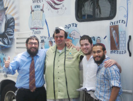

Sun, Surf, Spring Training and Shlichus in Clearwater
Clearwater, Florida attracts millions of tourists and sports enthusiasts every year. Sadly, the assimilation rate in Clearwater is 95% and most men are in the “karkafta” category. * Rabbi Shmuel Reich and his family are out on the front lines in Clearwater, where they are contending with a most chal

Nine months of the year there are golden beaches, crystal clear waters and endless palm trees along hundreds of miles of stunning coastline. The weather brings thousands of tourists on vacation as well as millions of people who enjoy sports. Professional baseball’s spring training camps turns tranquil Clearwater into a bustling and noisy place. That’s Clearwater, one of the many coastal cities in the Tampa Bay Area.
According to the shliach, Rabbi Shmuel Reich, the town is like one big beach. Locals and tourists spend most of their time drinking, gambling, boating and fishing, and seem to swarm all over the place, especially during vacation season. A high percentage of people are retirees who can’t stand the cold in New York and New Jersey.
It’s a little over three years since Rabbi and Mrs. Reich arrived on shlichus in Clearwater. From the outset, he knew that he had one goal: to bring Yiddishkait into a place devoid of any signs of Jewish life. He also knew that this would not be an easy job.
He noted sadly that during three years of outreach, he met only two young couples in which both spouses were Jewish. The intermarriage rate is extremely high.
Not only that, but most of the Jewish population consists of older people. Most are Holocaust survivors or immigrants from Central America.
“What makes it even worse is that 80% of assimilated Jews attend church on Sundays. The churches provide financial aid by paying for electricity, water and food. Unfortunately, many Jewish families living on fixed incomes are helped by them.
“One day, I met an Israeli woman, age 42, married to a local non-Jew who is twenty years younger than her. She told me about their life together the past three years and that she was about to give birth to a boy. My wife explained that her child would be Jewish and it was important to have him circumcised. The woman was afraid and was not willing to do it, probably because of her gentile husband and also because she was afraid for her baby. We invited her to a Shabbos meal in the course of which my wife spoke about the importance of bris mila. In order to convince her, I took her to a bris and showed her there was nothing to worry about. She was finally convinced. When she gave birth, I was in touch with her in order to plan a bris. I promised her that the event would be a nice one and would take place in a hall.
“The morning of the third day after the birth, she called and said that the doctor had already circumcised the baby. I was upset that the bris had not been done according to Halacha, but there was nothing that could be done. I called Rabbi Yaron Amit to at least do HaTafas Dam. Because he had been born on Lag B’Omer, his mother had decided to name him Yonatan Bar Yochai. This story shows you the ignorance and distance that Jews feel from their roots.”
THE SHLIACH SURPRISED ME AT THE DOOR
“In 5748, my parents bought a house on President Street, opposite the Rebbe’s house. Even as children, we could appreciate the tremendous z’chus of living near the Rebbe. When the Rebbetzin passed away that year, the Rebbe had a minyan in his house three times a day with only a few people joining based on a lottery drawing. In the summer, when many people leave Crown Heights, these minyanim were almost empty. That is how, even before my bar mitzva, I was able to go inside a lot. The fantastic experience of davening in the Rebbe’s house is something I will never forget. I was already sure that when I grew up, I would go on shlichus.”
How did you end up in Clearwater?
“At first, people looked at us as though we had fallen from Mars. Nobody understood why we had chosen Clearwater. There is nothing here for a religious Jew and even I had not thought of coming here. We came because my wife pushed me nonstop to find a shlichus.”
Still, why Clearwater?
“It was shortly after we had married. We lived in Crown Heights on the sixth floor of an apartment building. One day, there were knocks at the door. I was surprised to see Rabbi Eliezer Rivkin, the first shliach to Tampa, huffing and puffing after the climb. I invited him in and offered him a drink, but he got straight to the point and offered me a shlichus in Clearwater. I figured, if he made the effort of climbing up to the sixth floor, I’m going. It definitely made a big impression on us. He did not invite us to his office; nor did he send go-betweens to speak to us. He is a veteran shliach who has been on shlichus for 35 years and without any of the trappings of officialdom, he knocked at our door and invited us to join him on shlichus. It won me over.
“The decision was easy. My wife, a real eishes chayil, who educates our children with mesirus nefesh, gets all the credit.”
In Clearwater today there are two large Jewish strongholds: The Conservative community and the Reform community. The Conservatives are more traditional than the Reform and used to run two Jewish schools, one of which just closed.
The two communities have many “temples,” but they are almost empty of congregants except for Rosh HaShana and Yom Kippur.
“When we came to Clearwater, they were afraid of any move we made. The Reform community was furious. The fact that we did not recognize their conversions made them mad. They were mainly angry about the fact that Orthodox Judaism does not recognize equality among the nations.”
It sounds like your work in Clearwater is not at all easy, and yet, these difficulties did not make you change your minds.
“G-d forbid, on the contrary. You probably know that there are many sichos in which the Rebbe describes the terrible spiritual state among Jews today. The Rebbe talks about the darkness of galus, emphasizing that shlichus is literally a matter of saving lives. Some people think it’s a description of the past, from 45 years ago, but today, in our generation, when there are Chabad houses all over the globe, it no longer exists. It is only when I came here that I began to understand what sort of Jews the Rebbe was talking about. The pursuit of materialism drives people to all sorts of extremes.
“One day, I met a Hebrew-speaking guy on the street who grew up in an Israeli home but had never seen t’fillin. He hadn’t even heard of the concept of t’fillin. We decided to invite him for a Shabbos meal. He came a little early and when he walked in, he saw my wife lighting Shabbos candles and murmuring something. He watched as though hypnotized and then asked what she was doing.
“Despite the low spiritual state here, you can find many encouraging signs. In fact, the terrible darkness motivates us all the more. You suddenly begin to understand the tremendous kochos and responsibility that the Rebbe bestows upon each shliach.
“This year, we opened a yeshiva for bachurim who finished their year of K’vutza. We advertised the yeshiva in the local papers and it made a big Kiddush Hashem. One of the bachurim was buying a shirt when a 78 year old woman approached him and asked, ‘Are these tzitzis?’ He told her they were and she burst into tears in front of all the customers. ‘You remind me of my departed father,’ she said. ‘I grew up in a religious home but today nothing remains of the education I received. All my friends go to church and I go with them. You remind me of my father.’
“It has happened on a number of occasions that people have told the bachurim that they are restoring Jewish pride. The Jewish pride we represent is not typical of life in Clearwater.”
GATHERING LOST SOULS
Aside from the locals, there are about 200 Israeli families living in Clearwater. Unfortunately, most are intermarried. These mixed marriages by Israeli men originally were motivated only by the desire to gain legal immigrant status, but as time went on it became more than that and they have brought children, who are not Jewish, into the world.
“The lack of awareness and Jewish education has led to a situation in which Jews who are 70-80 years old never put on t’fillin and never even saw such a thing! I am talking about over 95% of Jews who are karfkaftaos. Over the years, I have put on t’fillin and made bar mitzvahs for more than 400 karkaftaos and numerous brissin have been done too.
“As a shliach of the Rebbe, I don’t make a move without knowing what the Rebbe wants. Boruch Hashem, I always receive clear answers. On my thirty-first birthday, I asked the Rebbe for a bracha regarding a certain matter in which I was encountering difficulties. I opened to an answer which said, ‘In connection with your thirty-first birthday…’ In the letter, the Rebbe urged me to increase my activities without being fazed by what was going on around me.”
Rabbi Reich told me the following incredible story:
“There is a huge flea market in Clearwater that offers second-hand goods at excellent prices. It attracts thousands of people every day, including marginal types and those who just sit around and drink. Normally, I would never consider going there, but the realities of life here compelled me to go. I ended up making over twenty bar mitzvahs for older Jews who never knew anything at all about Judaism.
“One day, as I strolled around the flea market, someone addressed me in Yiddish. At first, it didn’t register; it sounded like out of a dream. Why would a local person address me in such a place in Yiddish? I kept on walking until it hit me, the person was addressing me! I retraced my steps and to my amazement, I saw a man in his sixties with a long ponytail and tattoos. I began talking to him and learned that his parents were Holocaust survivors and his eight siblings had been murdered al Kiddush Hashem. His parents had dropped any connection with Judaism. He spoke Yiddish but had never seen t’fillin. Of course, I made him a bar mitzva on the spot. His face took on a whole new cast and he began to cry. I couldn’t restrain myself and soon joined him.
“On another occasion, I met a Jewish lawyer married to a non-Jew who, for the sake of ‘shalom bayis’ had converted. If I hadn’t gone over to him with the Seven Noachide Laws, I doubt whether he would have ever put on t’fillin in his life.”
How do you explain this plague of assimilation and intermarriage?
“What our enemies did not succeed in doing, assimilation has managed to accomplish. It is the veritable destruction of Klal Yisroel r”l. The Reform contributed plenty to this problem. Any man or woman who decides to join the Jewish people through marriage can easily find a Reform ‘rabbi’ willing to ‘convert’ them. The vast majority of Jews here think nothing of marrying out. They are so ignorant that none of them feels that intermarriage will make any significant change in their lives. Whether or not their children are Jewish doesn’t bother them. It’s heartbreaking.
“In addition, there are so many people who have cut off all ties with their people and the Torah. I meet them all the time. There are older women who have grandchildren already and who look like gentiles in every respect. When I start talking to them, I discover that they are Jewish and they know good and well what Judaism is. What’s worse is meeting people who have two Jewish parents to whom Judaism means nothing.”
STARTING FROM ZERO
What do you do about kosher food in a city where there is no demand for it?
“Just so that you have the facts – on the entire western coast of Florida, about 800 miles, there isn’t a single kosher restaurant. When the economy crashed, the price of meat went up and the demand for kosher food shrunk. Obtaining kosher meat or dairy products here is almost impossible. We get most products from Miami. Every two months we take a big van and make an enormous food order. When I go shopping, I always keep in mind holidays that are three months off. It sounds absurd but that’s the way we have to do it.”
It sounds like most of your work is one-on-one and there is no expectation of starting a k’hilla. Isn’t that very difficult?
“Definitely, but who says we go on shlichus for things to be easy? Shluchim naturally want big successes like developing a k’hilla and putting up buildings, but the work here is very different. It’s one-on-one. You can find Jews who are 60, 72, and even 89 who never put on t’fillin. I make the rounds of hospitals and senior centers and work with people whom nobody is thinking about. In my three years of shlichus I have made hundreds of bar mitzvahs for elderly Jews, some of who never saw t’fillin before. Where else in the world do you have something like this?
“The distances between neighborhoods in Clearwater are enormous. A distance of ten miles is considered very close, so even if there was a desire for a k’hilla, it would be impossible because people are so widely scattered.”
Tell us about the two tanks you use.
“Three years ago, we decided to buy a mitzva tank. The story of the two tanks is a miracle story of the Rebbe.
“Before Pesach 5770, I was sitting with a Jew who is a Brigadier General in the American army, a doctor by profession named Dr. Robert. Since we have been friends of years, I was showing him pictures of our work. He surprised me when he said, ‘Rabbi Reich, you need a mitzva tank.’ I asked him how he knew about the concept. He said that twenty years earlier he had studied medicine in New York where he first saw a Chabad mitzva tank. He committed to a donation of $10,000.
“Last Gimmel Tammuz, I visited Rabbi Motty Anati’s center in Ft. Lauderdale. Rabbi Anati told me that they were about to purchase a new tank. I told him about the donation I had gotten for a tank. As I left his Moshiach Center, I saw on the video screen (that is always on) a segment from ‘dollars’ in which a shliach to Miami approaches the Rebbe with a wealthy donor who donated a tank. They were giving the Rebbe the keys to the tank. I saw this as a message for me. I quickly raised the rest of the money that I needed and with the help of several donors I bought the tank belonging to the Moshiach Center. When I bought it, I had in mind that it would be one of two, and the second one did indeed come a short while later. I thank Rabbi Anati, Rabbi Mor Yosef and my brother Menachem Yosef who helped me so much.
“Three months later, an older Jew from Miami called the shliach, Rabbi Rivkin. The man had become blind in one eye and he said that due to his visual limitations, he had decided to donate his mobile home to Chabad.
“When we bought the tank, we had no idea what an impact it would make on the city. It was widely covered by the media.”
Rabbi Reich proudly pulled out a number of newspaper clippings with articles about the tank and the Chabad house.
“They were surprised that there are religious Jews in a place like Clearwater. Clearwater represents freedom from anything restrictive, so a mitzva tank in a place like this is quite a novelty. Even many gentiles ‘honk’ at me as a sign of friendliness.”
Are there other public events that you do?
“For Chanuka 5771, my brother Menachem Yosef and I decided to make a big splash. We arranged with the mayor for a big public menorah to be put up in front of City Hall. We had a six meter menorah made. The menorah lighting took place next to City Hall and hundreds of people were there despite the strong winds. It was a display of Jewish pride that Clearwater had never seen before. People cried and were moved. Hundreds of people watched out of neighboring buildings at the nightly event. We also placed three other public menorahs in busy areas of Clearwater.
“We ordered the menorahs from New York and had a problem getting them to Clearwater. Sending them by truck entailed twenty hours of driving which would cost thousands of dollars. We barely had the money to purchase the menorahs and certainly did not have the money to transport them by truck.
“We tried coming up with an alternative but couldn’t think of one. I spoke with Rabbi Rivkin who referred me to his son. He gave my brother the number of a truck driver who said that just that week he had to make a delivery from Florida to New York and on his way back, he could bring the menorahs. To the driver’s credit, he risked his job by doing this for us.”
From the way you describe your approach, it sounds like you relate to people where they’re at, in Olam HaZeh, and direct them to k’dusha.
“That’s right. Life is rushing along at a dizzying pace, and in recent years the world has become crazier. People are in an endless chase after life’s pleasures with no end in sight. Clearwater is a good illustration of this. I decided the time has come to speak to the world in a language it understands. Our job as Jews and Chassidim is to make order in these things, creating a dwelling for G-d here below. I suggest that every shliach see how to utilize the craziness of the world as it manifests in his location, for inyanei k’dusha.”
What about publicizing Moshiach and Geula?
“Whoever sees me on the street knows that I am a Lubavitcher whose only goal is to bring Moshiach. If you don’t live with the subject of Moshiach, it’s almost impossible to contend with these situations.
“One day, I walked into an exclusive bicycle store where I met a Catholic fellow, a salesman for a bicycle company. He asked me, ‘Are you one of those who believes that your rabbi is the messiah?’
“People see this on us. We have it emblazoned on the tank and the bachurim tell everyone about the Rebbe’s prophecy that Moshiach is coming. We sometimes get interesting questions from people who want to know about Moshiach.”
As we concluded the interview he said, “Moshiach is not a slogan; it’s life itself. A big building, a beautiful k’hilla, they are not the goal. On Chaf-Ches Nissan the Rebbe exhorted, ‘Do all that you can,’ and we still have a lot of work to do. We need to transform the world until the hisgalus of the Rebbe Melech HaMoshiach.”
Menachem Savyon. "Sun, Surf, Spring Training and Shlichus in Clearwater." Beis Moshiach, no. 830 (April 2, 2012).